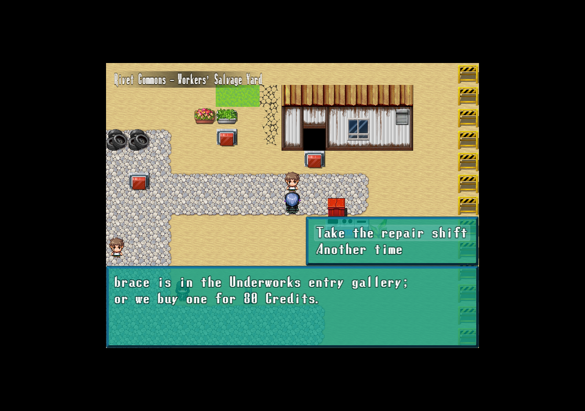
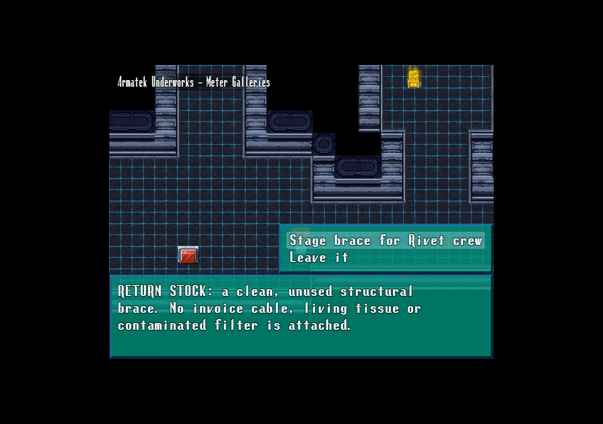
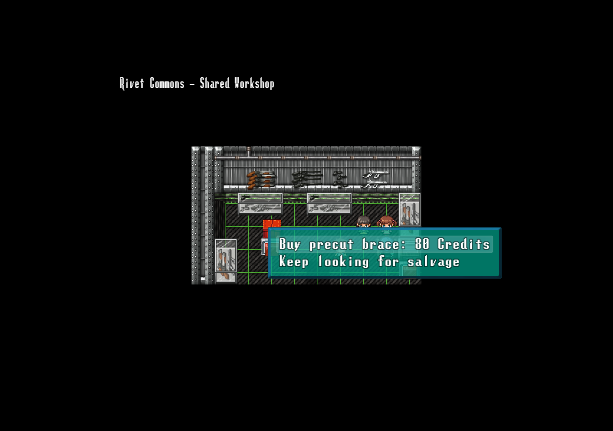
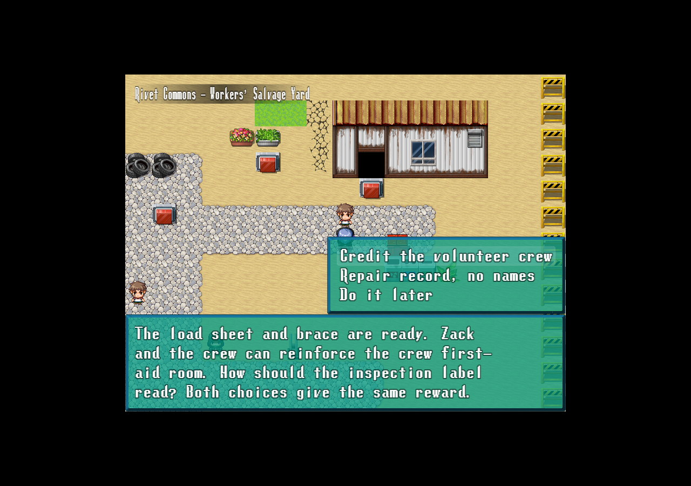
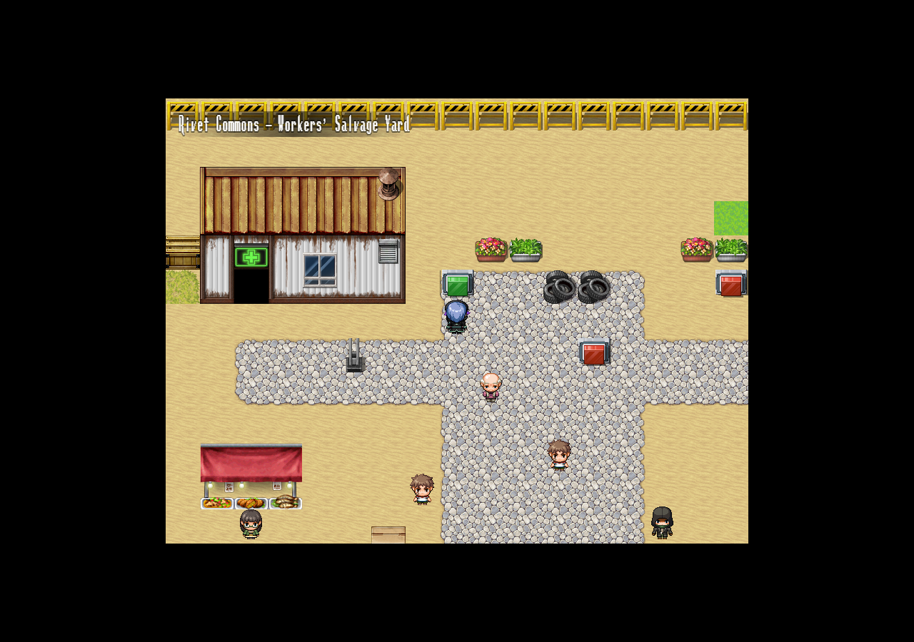
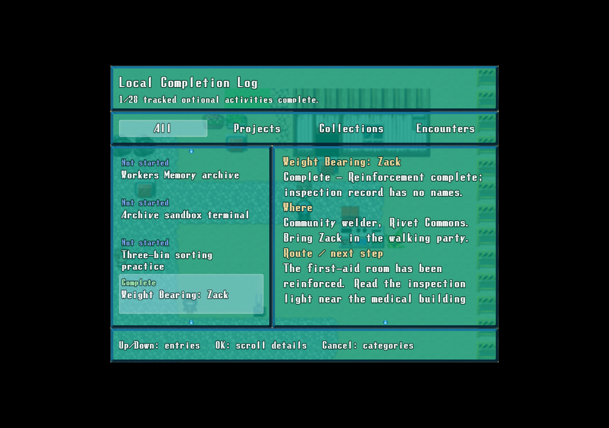

Zack helps Rivet's volunteer crew reinforce the existing first-aid room. Start at the community welder with Zack in the walking party. Native screenshots below come from isolated test games.
The work order

Copy Socket's load sheet, then salvage a clean brace or buy one for80 Credits.
Free salvage route

The marked entry-gallery cache requires no boss, exposure roll or existing organ-ledger completion.
Paid material alternative

Socket stages one brace after confirmation. Already staged material cannot be charged again.
Choose the inscription

Both choices award100 Credits,1 Green Herb and200 EXP to Zack only.
A visible local outcome

The red inspection indicator turns green. Its text records the chosen crew credit.
Completion recorded

This is one finished companion chapter. Other companion stories remain on the backlog.